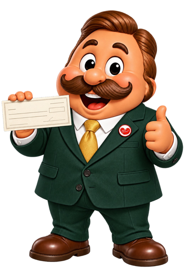

Esta es la ventana de mantenimiento de monedas del módulo de Bancos. Aquí puede consultar, agregar, modificar y eliminar las monedas con las que trabaja la empresa (por ejemplo el Quetzal y el Dólar). Cada moneda tiene un código de tres letras, un nombre y un símbolo. En las imágenes de esta ayuda, los números rojos indican el orden en que se explica cada elemento.
1. En el menú de la izquierda busque la sección "Mantenimientos".
2. Presione el botón "Monedas". Se abrirá la ventana "8001 – MantenimientoMoneda".
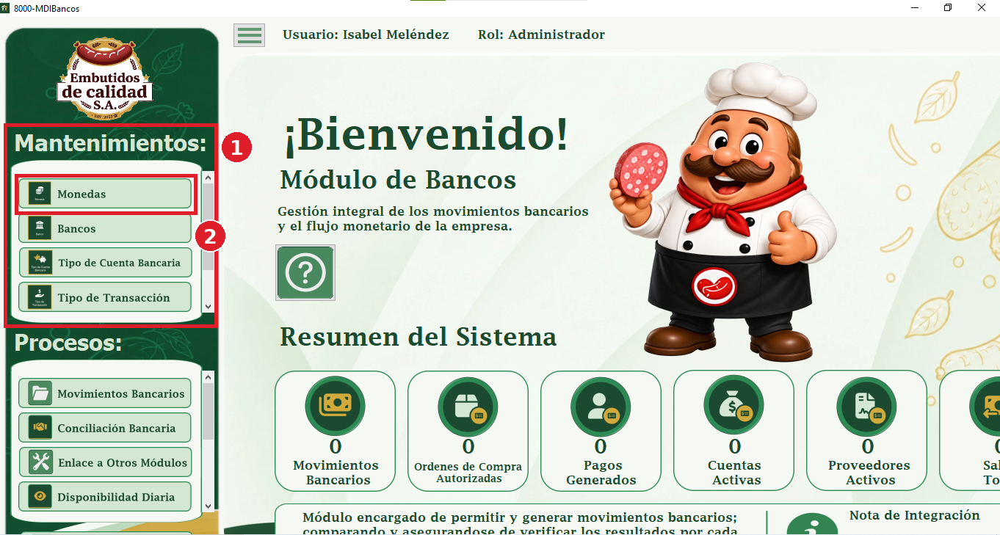
1. Barra de botones: contiene todas las acciones que puede realizar con las monedas.
2. Tabla de monedas: muestra una moneda por fila. La fila en azul es la moneda seleccionada.
La tabla tiene estas columnas: "Pk_Moneda" es el número que el sistema asigna a cada moneda; "codigoMoneda" es el código de tres letras (por ejemplo GTQ o USD); "nombreMoneda" es el nombre completo; "simboloMoneda" es el símbolo que se usa al escribir un monto (por ejemplo Q o US$); "is_active" indica si la moneda está activa (1) o inactiva (0); "created_at" es la fecha en que se creó el registro y "updated_at" la fecha de su última modificación.
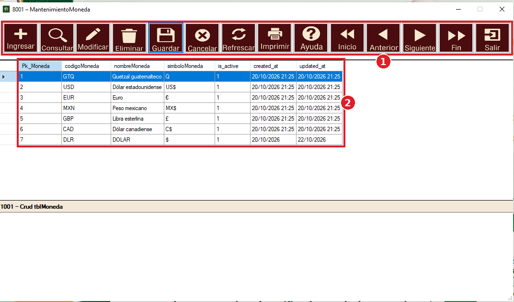
1. Ingresar; permite escribir una moneda nueva.
2. Consultar; busca una moneda en la tabla.
3. Modificar; permite cambiar los datos de la moneda seleccionada.
4. Eliminar; borra la moneda seleccionada.
5. Guardar; confirma lo que escribió al ingresar o modificar.
6. Cancelar; deja lo que estaba haciendo sin guardar cambios.
7. Refrescar; vuelve a cargar la tabla con los datos más recientes.
8. Imprimir; después de usar la ventana este botón es reemplazado por el botón verde "Reporte", que abre el reporte de monedas.
9. Ayuda; abre un archivo de ayuda.
10. Inicio; se posiciona en la primera moneda de la tabla.
11. Anterior; retrocede una moneda.
12. Siguiente; avanza una moneda.
13. Fin; se posiciona en la última moneda de la tabla.
14. Salir; oculta el formulario y la tabla.
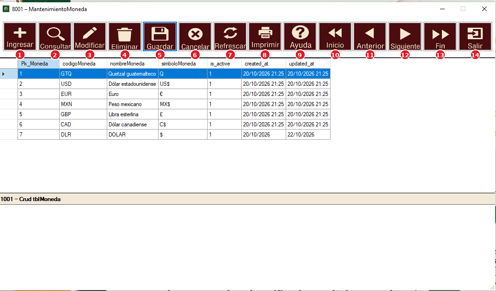
Use este botón para registrar una moneda nueva. Siga estos pasos:
1. Presione el botón "Ingresar"; se abre el formulario "Nuevo registro".
2. Pk_Moneda; es el número de la moneda. El sistema lo asigna solo, no necesita escribirlo.
3. codigoMoneda; escriba el código de tres letras de la moneda, por ejemplo "GTQ". Debe tener exactamente tres letras.
4. nombreMoneda; escriba el nombre completo, por ejemplo "Quetzal guatemalteco".
5. simboloMoneda; escriba el símbolo de la moneda, por ejemplo "Q".
6. is_active; deje la casilla marcada si la moneda debe estar activa. Si la desmarca, la moneda queda inactiva.
Los campos "created_at" y "updated_at" son las fechas del registro; no es necesario cambiarlas. Cuando termine de llenar los datos presione "Guardar".
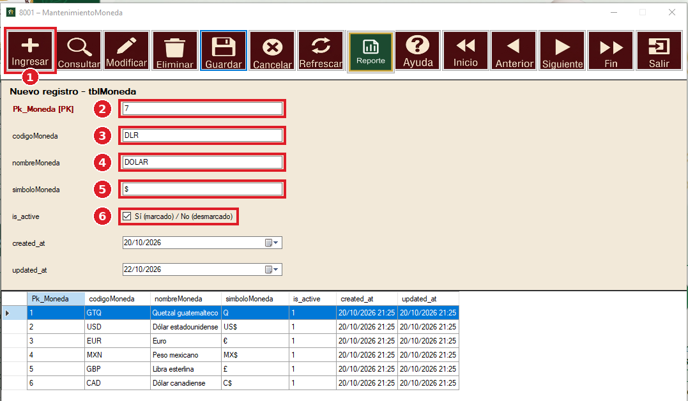
Después de presionar "Ingresar" (o "Modificar") y llenar los datos, siga estos pasos:
1. Presione el botón "Guardar". Si falta algún dato (código de tres letras, nombre o símbolo) el sistema se lo indicará y no se guardará nada hasta que lo corrija.
2. Aparece el mensaje "Registro guardado correctamente", que confirma que los datos quedaron registrados.
3. Presione "Aceptar". La tabla se actualiza y muestra la moneda guardada.
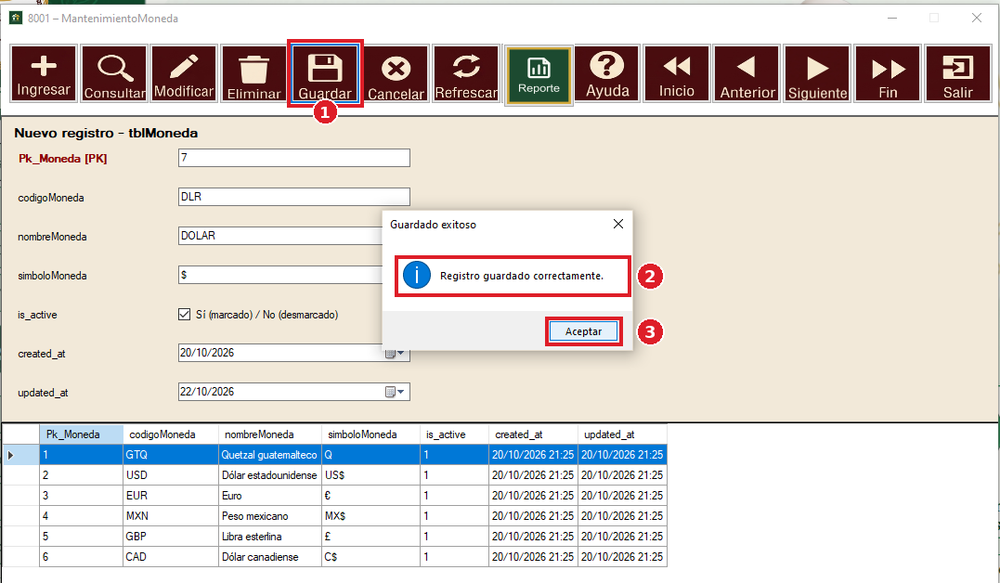
1. Presione el botón "Consultar". Se abre una ventana para elegir la moneda que desea buscar; selecciónela y acepte. La tabla muestra solo esa moneda. Si cierra la ventana sin elegir, la tabla se queda como estaba. Para volver a ver todas las monedas presione "Refrescar".
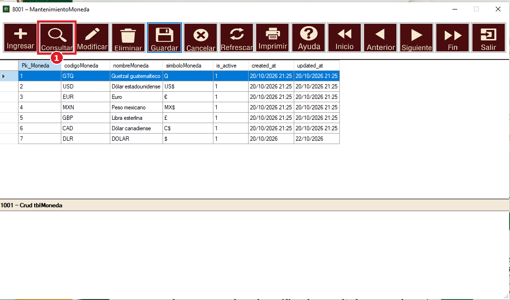
Use este botón para corregir los datos de una moneda que ya existe.
1. Seleccione en la tabla la moneda que desea cambiar y presione el botón "Modificar". Los datos de esa moneda aparecen en el formulario; el número (Pk_Moneda) no se puede cambiar.
2. Cambie lo que necesite y presione "Guardar". Aparece un mensaje de confirmación y la tabla se actualiza con los nuevos datos.
Si una moneda ya no se debe usar, puede desmarcar la casilla "is_active" para dejarla inactiva en lugar de eliminarla.
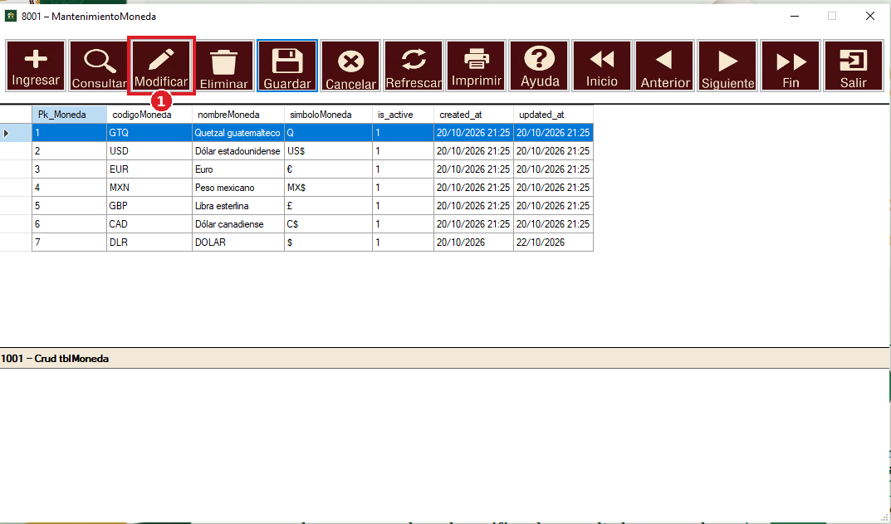
1. Seleccione en la tabla la moneda que desea eliminar y presione el botón "Eliminar".
2. El sistema le pide confirmar. Si acepta, la moneda se elimina y la tabla se actualiza sin ella.
Importante: si la moneda ya está siendo usada en otros datos del sistema (por ejemplo en una cuenta bancaria), no se podrá eliminar. En ese caso utilice "Modificar" y desmarque la casilla "is_active".
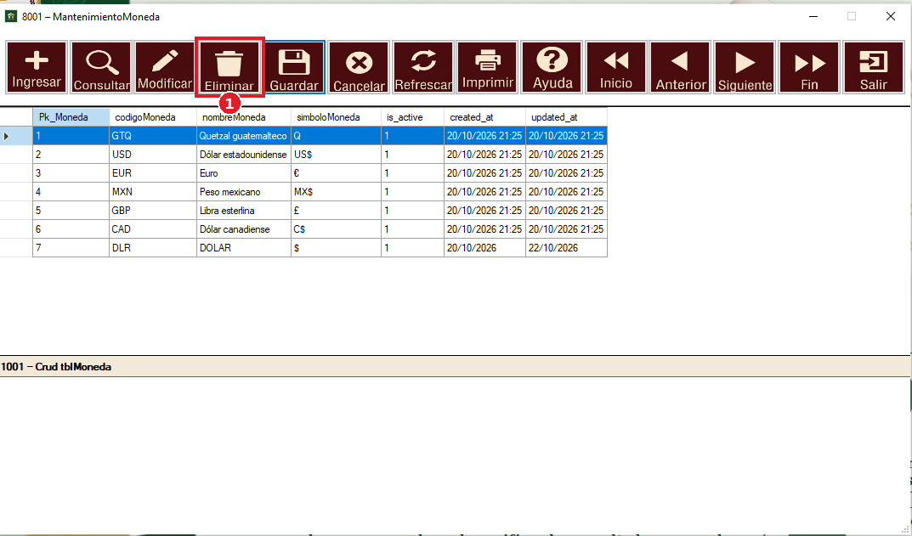
Si está ingresando o modificando una moneda y ya no desea continuar, presione "Cancelar". El formulario se cierra y no se guarda ningún cambio. Este botón no elimina monedas.
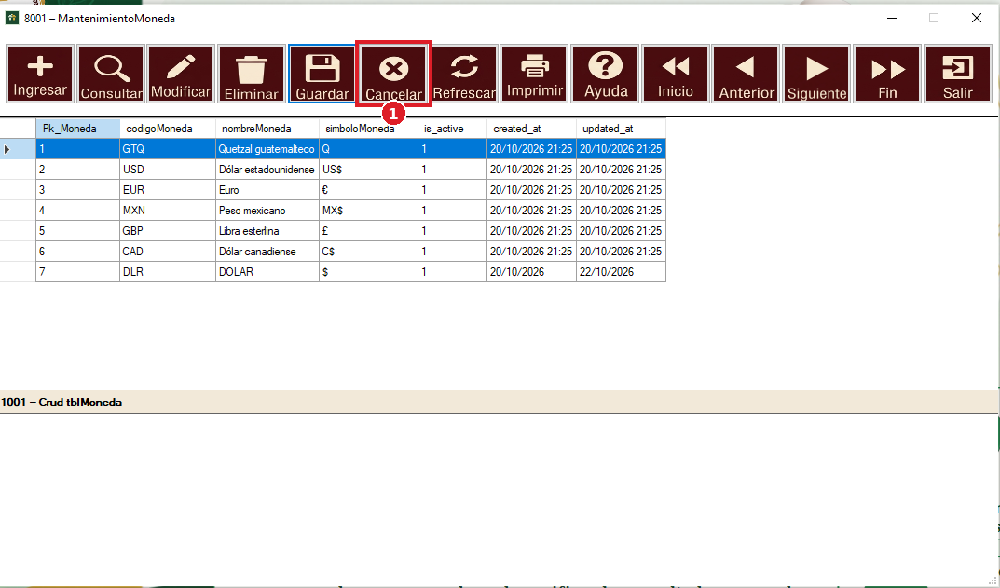
1. Presione el botón verde "Reporte". Aparece en el lugar del botón "Imprimir" cuando empieza a usar la ventana (por ejemplo, al elegir una moneda o presionar "Siguiente").
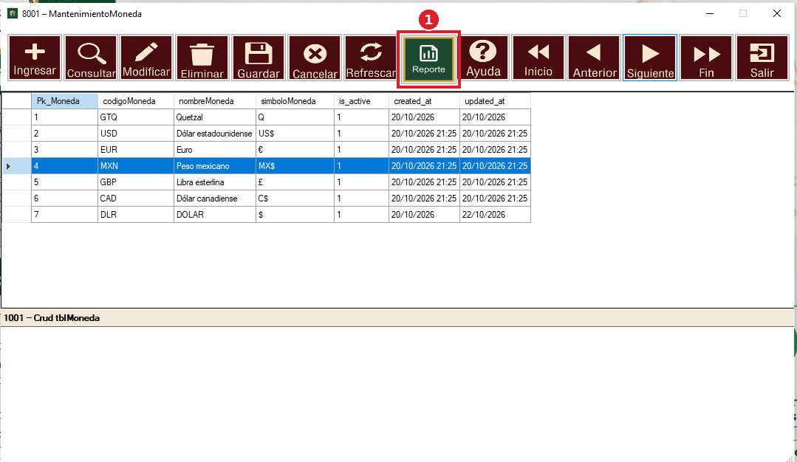
Se abre la ventana "8001 – ReporteMoneda" con el listado de todas las monedas: código, nombre, símbolo, fecha de creación y si está activa. Esta ventana tiene sus propias herramientas:
1. Páginas; permite pasar a la página anterior o siguiente del reporte y ver en qué página se encuentra.
2. Imprimir y exportar; permiten imprimir el reporte, cambiar la forma de verlo y guardarlo como archivo (por ejemplo PDF, Word o Excel).
3. Zoom; agranda o reduce el tamaño del reporte en pantalla.
4. Buscar; escriba una palabra y presione "Buscar" para encontrarla dentro del reporte; "Siguiente" va a la siguiente coincidencia.
5. Listado de monedas; es el contenido del reporte.
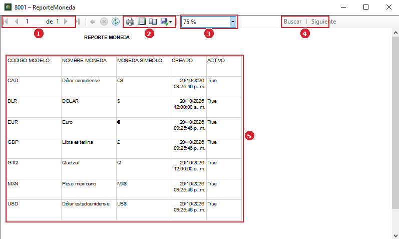
1. Refrescar; actualiza la tabla con los datos más recientes y quita cualquier búsqueda hecha con "Consultar". Es útil si los datos cambiaron fuera de esta ventana.
2. Inicio; nos posiciona en la primera moneda de la tabla.
3. Anterior; retrocede una moneda dentro de la tabla.
4. Siguiente; avanza una moneda dentro de la tabla.
5. Fin; nos posiciona en la última moneda de la tabla.
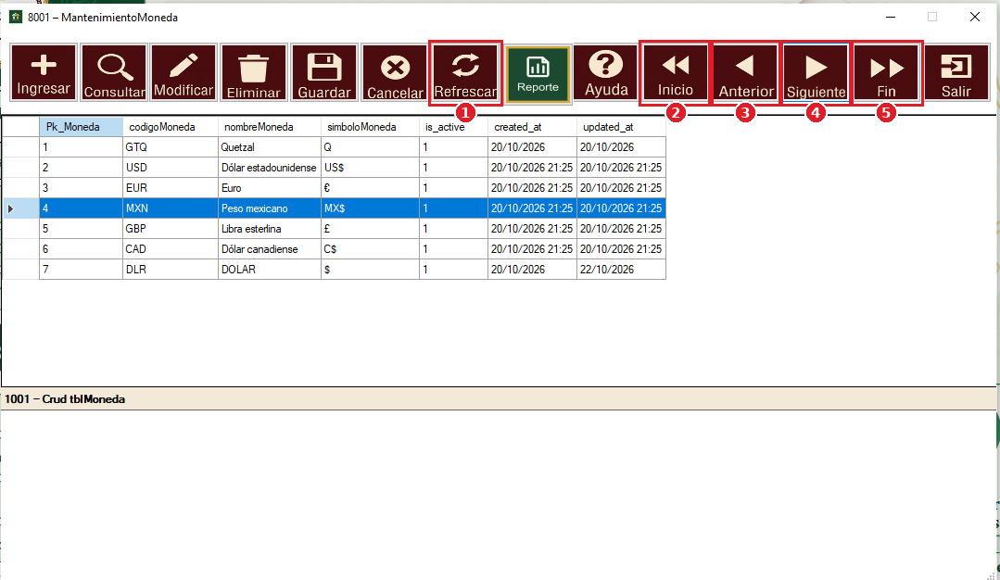
1. Este botón abre un archivo de ayuda con información que debe conocer para usar correctamente esta ventana.
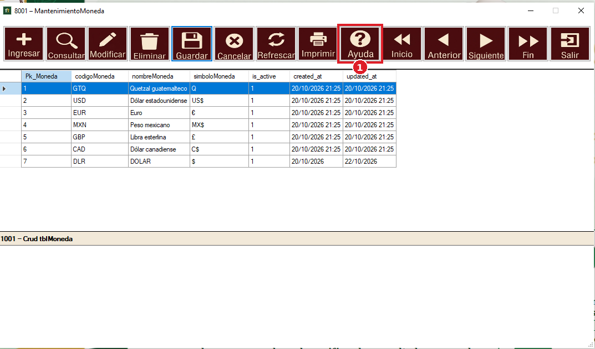
1. Al presionar este botón se oculta el formulario y la tabla y solo queda visible la barra de botones. Para cerrar la ventana por completo use la X de la esquina superior derecha.
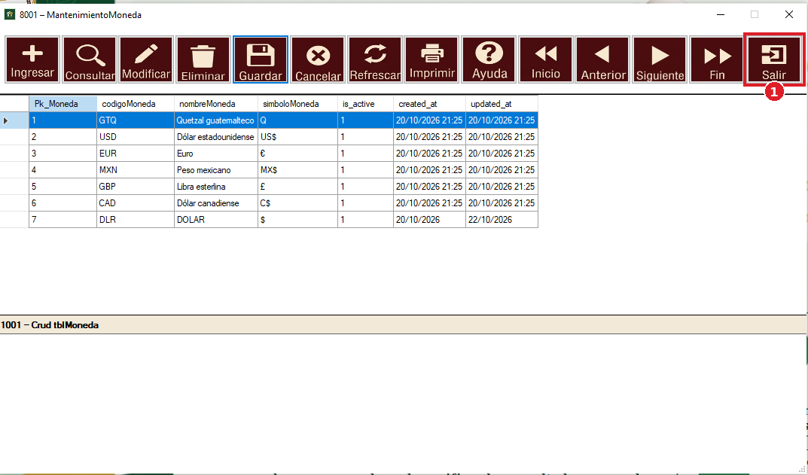